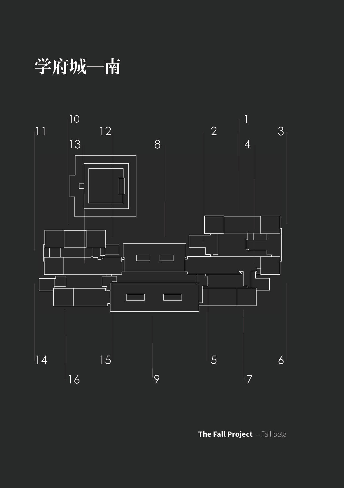

Dev
站点的结构与排版约定，以及位图素材的对照版本。
站点结构
站点为纯静态页面，由 GitHub Pages 直接托管，无构建步骤。全部页面共用
css/site.css 与 js/site.js，页面内不再保留局部样式表。
css/site.css：设计变量、版式、组件与响应式规则。js/site.js：仅负责窄屏导航的展开与收起；脚本不可用时导航保持展开。image/、pdf/：图像与文档资源。
断点
- ≤ 719px：单列布局，导航折叠为菜单，栅格降为一列。
- 720px – 1023px：两列栅格，导航展开为横排。
- ≥ 1024px：内容宽度上限 1120px，栅格按 260px 最小列宽自动填充。
正文宽度限制为 74 个字符，字号与间距使用 clamp() 随视口连续变化；
颜色跟随系统的浅色或深色偏好切换。
位图素材

